Call:
lm(formula = Arbeidssted ~ beftot, data = regresjon)
Residuals:
Min 1Q Median 3Q Max
-25962 -540 1159 1756 69577
Coefficients:
Estimate Std. Error t value Pr(>|t|)
(Intercept) -2254.158942 47.010461 -47.95 <0.0000000000000002 ***
beftot 0.675890 0.001123 601.77 <0.0000000000000002 ***
---
Signif. codes: 0 '***' 0.001 '**' 0.01 '*' 0.05 '.' 0.1 ' ' 1
Residual standard error: 4192 on 8923 degrees of freedom
Multiple R-squared: 0.976, Adjusted R-squared: 0.9759
F-statistic: 3.621e+05 on 1 and 8923 DF, p-value: < 0.00000000000000022Regional utvikling i Norge
Datainnsamling
Sentralitetsindeksen for norske kommuner
Beksriver hvor sentralt kommuner ligger.
Indeksen måler hvor lett det er for innbyggerne å nå arbeidsplasser og viktige tjenester, og bygger på beregnet reisetid med bil fra bebodde områder. På denne måten fanger indeksen opp faktisk tilgjengelighet, der korte reiser teller mer enn lange.
Den er basert på to hovedvariabler: Tilgang til arbeidsplasser (innenfor en reiseramme på opptil 90 minutter) og tilgang på et bredt tjenestetilbud (som handel og offentlig tjenester).
t-test (2020 - 2023)
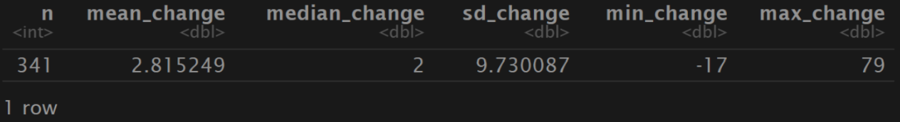
Gjennomsnitt har indeksen økt med 2,8%, nedgang og økning (-17, 79)
Tyder på at sentraliteten er ganske stabil i perioden
341 kommuner er med
Prosentvis arbeidsledighet
NAV og SSB (AKU) måler begge arbeidsledighet, men de gjør det på forksjellige måter.
NAV- Antall registrert i NAVs system
SSB- Hentet fra AKU (Arbeidskraftundersøkelsen)
Bygger på samme ide om hva arbeidsledighet er
Datainnhenting
Alle data er hentet fra SSB sine sider, her er en oversikt hvilken tabeller som er benyttet.

Regional utvikling i Norge
Andersson 2019 skriver om Norges utvikling fra 1970 til 2017
Hvordan uliker variabler varierer rundt om i Norge
Høy befolkingsvekst i små kommuner fra 1970 til 1980, så større vekst i store kommuner.
Sentralisering skjer i arbeidsmarkedsregioner, og ikke mellom dem. Få tegn til økonomisk konvergens mellom regioner i Norge, i motsetning til mange andre europeiske land.
Pendling viktig.
Gjennom sin brede tilnærming gir Regionale utviklingstrekk 2025 et helhetlig bilde av strukturelle krefter som driver regional utvikling i Norge
Budrenteteori
Budrenteteorien gir et sentralt analytisk rammeverk for å forstå hvordan geografisk plassering påvirker arealbruk og boligpriser (Capello, 2016).
Ifølge teorien faller betalingsvilligheten for bolig med økende avstand til sentrum eller sentrale arbeidsmarkeder.
Osland & Thorsen (2008) Nyanseres denne teorien
Viser at boligpriser ikke bare påvirkes av fysisk avstand til sentrum, men også av regional arbeidsmarkedstilgjenglighet.
Harris-Todaro modellen
En modell som sier noe om hvorfor personer flytter til byen selv om det er høy arbeidsledighet.
Vekst i Norge
Hvorfor vokser noen byer raskere enn andreÅ
Byer med offshorevirksomhet eller andre naturessursbaserte virksomheter som fisk kraft som har gitt en høyere produksjonsvekst enn andre byer (Grünfeld & Leknes, 2016).
Den andre hovedforklaringen de peker på er utdanningsnivået til arbeidsstyrken
Visuell fremstilling av utviklingen i Norge etter 1986
Videre skal vi se på kartfremstillinger som illutreerer utviklinger av diverse variabler
Folketallsutvikling kart

Prosentvis folketallsvekst etter år 2000, der rosa er negativ utvikling og grønn er positiv utvikling
Folketallsutvikling graf
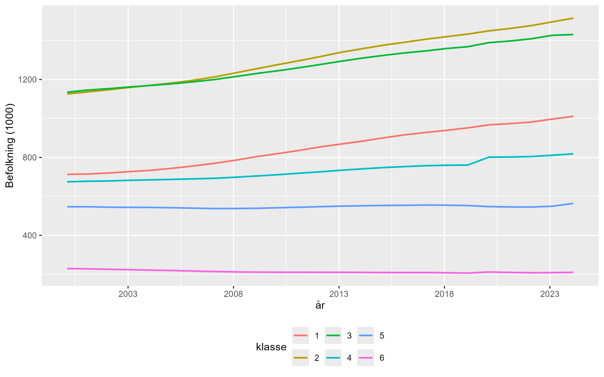
Figur 1: Folketallsutvikling fordelt på sentralitetsklasser
Befolkningsutvikling 20-29 kart

Andel befolkning i alder 20-29 år i 2024, der mørkere farge er høyere andel
Befolkningsutvikling 20-29 graf
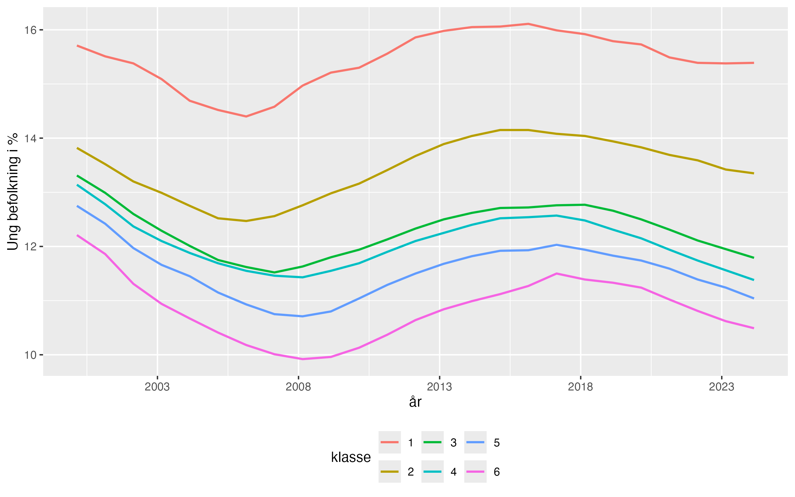
Utvikling i andel befolkning for 20-29 år, fra år 2000-2024, fordelt på sentralitetsklasser
Prosentvis arbeidsledighet kart

Prosentvis arbeidsledighet for 2024, der mørkere farge er høyere andel
Prosentvis arbeidsledighet graf
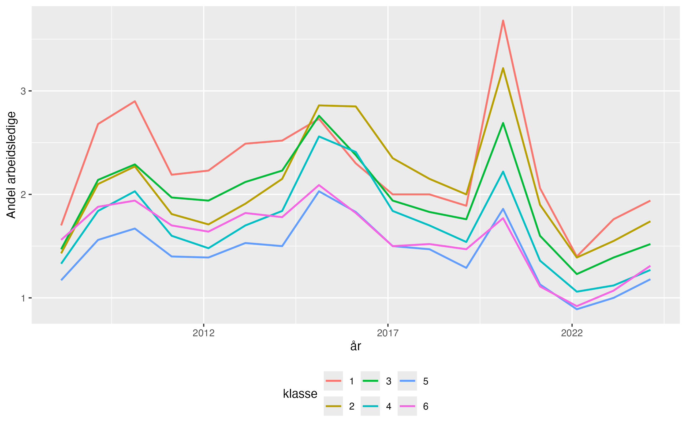
Utvikling i prosentvis arbeisledighet fra 2008-2024, fordelt på sentralitetsklasser
Sysselsettingsvekst kart

Prosentvis sysselsettingsvekst etter år 2000, der lilla er negativ vekst og grønn er positiv vekst
Sysselsettingsvekst graf
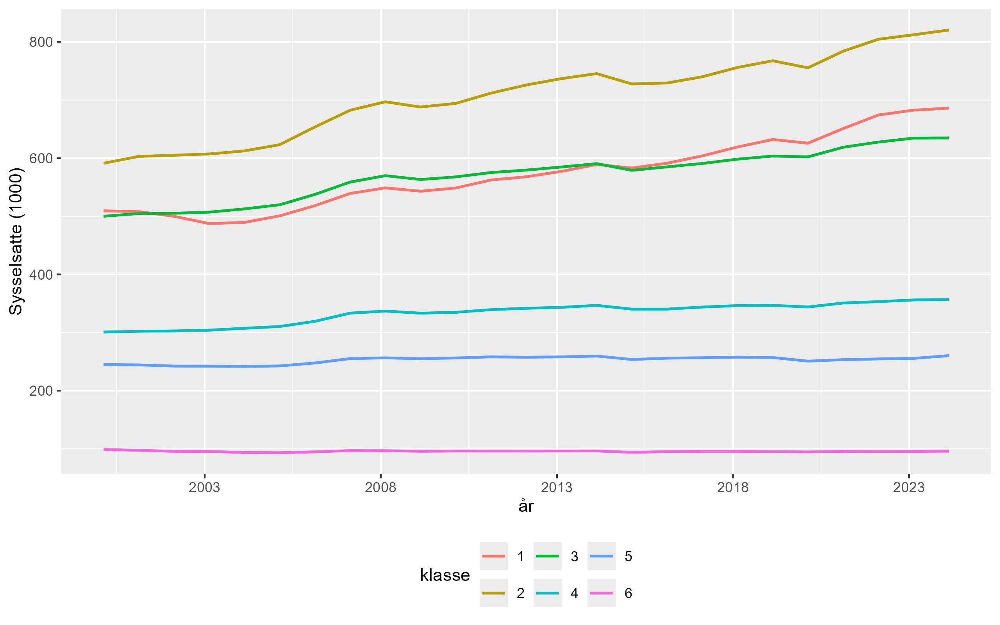
Utvikling i sysselsettingsvekst etter år 2000, fordelt på sentralitetsklasser
Kvmpris utvikling kart

Gjennomsnittlig kvadratmeterpris for eneboliger i 2024, der skravert område betyr 0 omsatte boliger, og jo mørkere farge jo høyere pris
Kvmpris utvikling graf
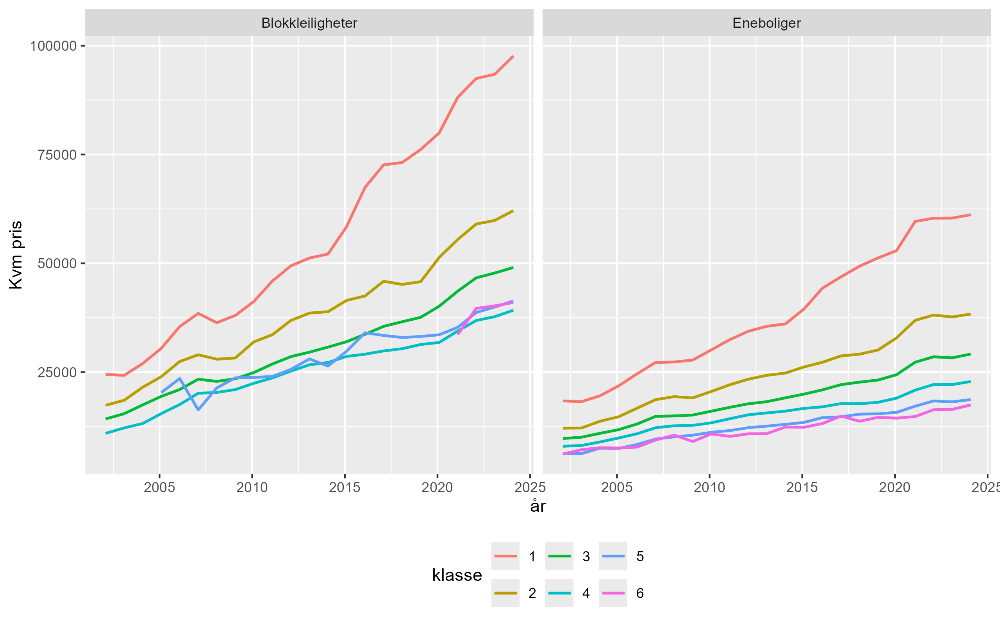
Utvikling i kvadratmeterpris for eneboliger og leilighet fordelt på sentralitetsklasser etter år 2002
Utdanning utvikling kart

Andel innbyggere med høyere utdanning i 2024
Utdanning utvikling graf
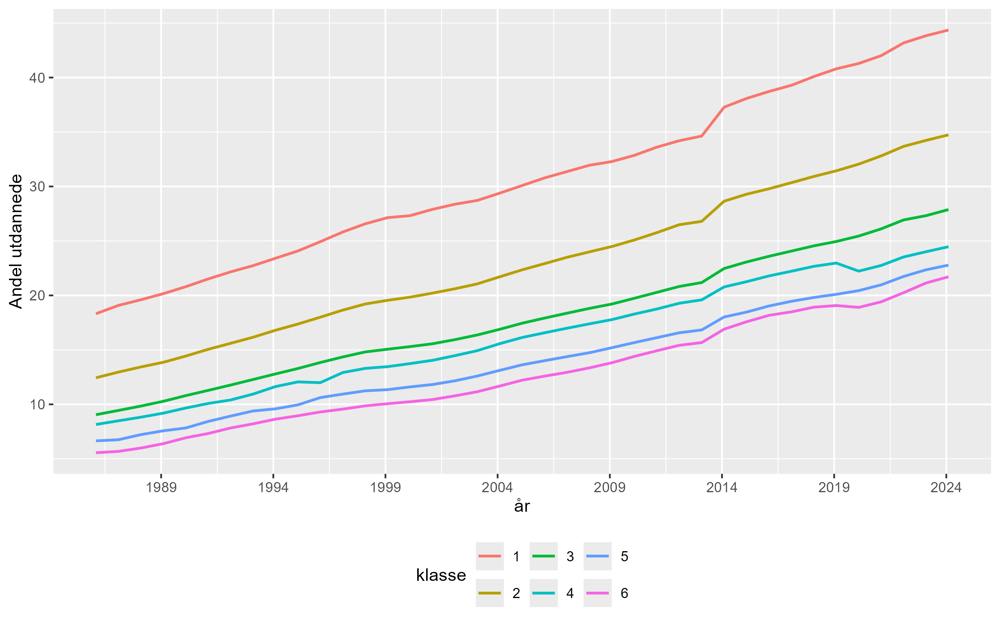
Utvikling i andel personer med høyere utdanning etter år 1986 fordelt på sentralitetsklasser
Flytting utvikling kart (18-29)

Netto utflytting per 1000 innbyggere for alder 18-29, der rød er utflytting og blå er innflytting
Flytting utvikling kart (30+)

Netto utflytting per 1000 innbyggere for alder 30+.’, der rød er utflytting og blå er innflytting
Flytting utvikling graf
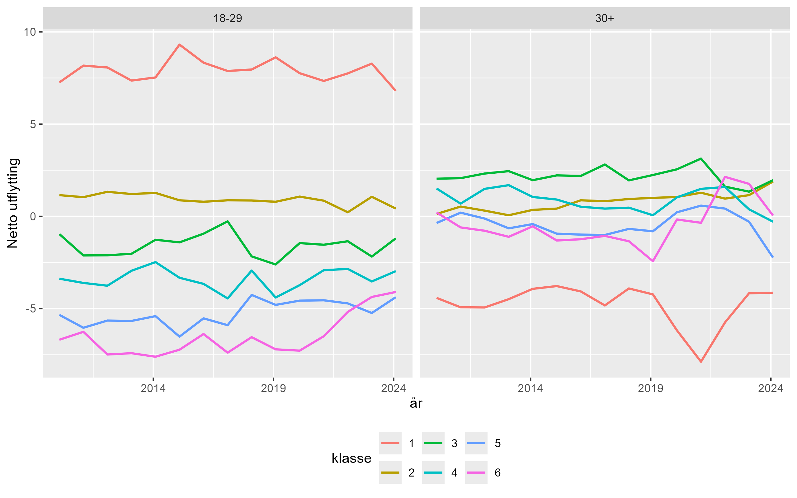
Utvikling i netto flytting for alder 18-29 og 30+, fordelt på sentralitetsklasseretter år 2010
Pendling utvikling kart

Netto pendling per 1000 arbeidsplasser, der rød er utpendling og blå er innpendling
Pendling utvikling graf
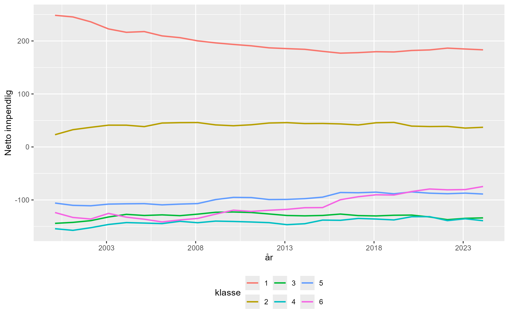
Utvikling i pendling per 1000 arbeidsplass etter år 2000, fordelt på sentralitetsklasser
Korrelasjonsberegninger
Et statistisk mål på samvariasjonen mellom to variabler
En positiv koeffisent indikerer positiv kovariasjon og vice versa
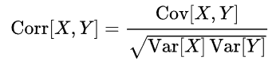
Korelasjon mellom gitte variabler
Svak samvariasjon
Koeffisient på mellom 0 og 0,40
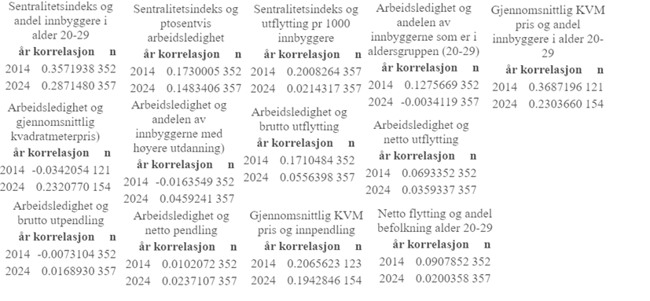
Moderat samvariasjon
Koeffisient på mellom 0,40 og 0,60
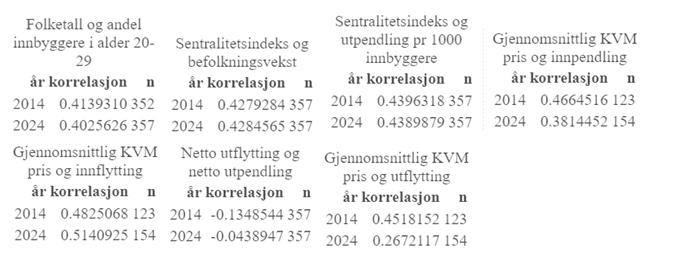
Sterk samvariasjon
Koeffisient på mellom 0,60 og 1
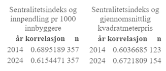
Paneldata
Korrelasjoner basert på årlige endinger innen hver kommuner.
Laget nytt datasett med Delta verdier
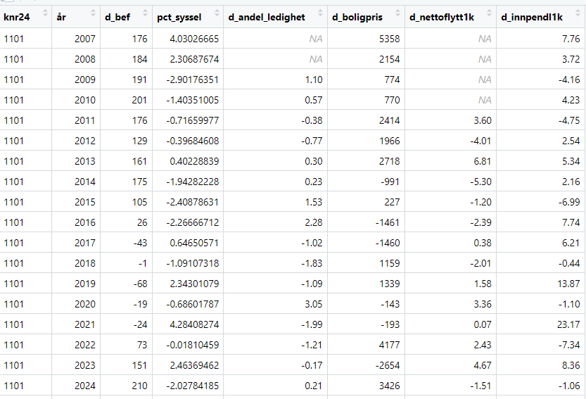
Resultater fra Paneldata analyse
Beregnes korellasjoner på tvers av år
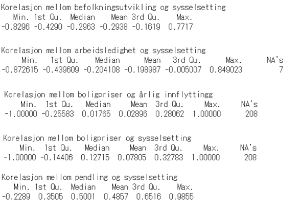
Trege virkninger
Tester for effekter som ikke slår inn samme år
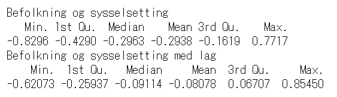
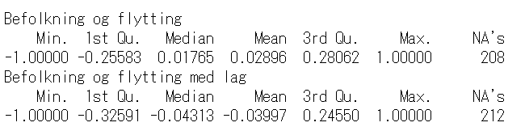
Spredningsdiagrammer
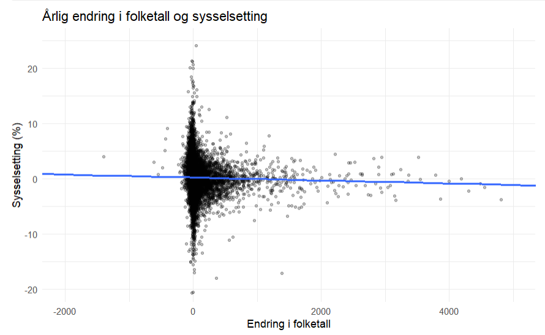
Sentralitet og boligpris
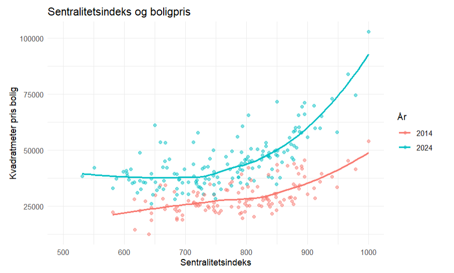
Sentralitet og innpendling
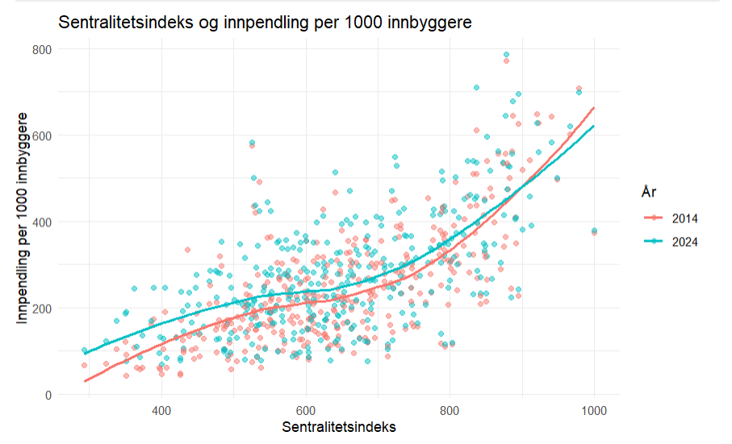
Arbeidsledighet og utflytting
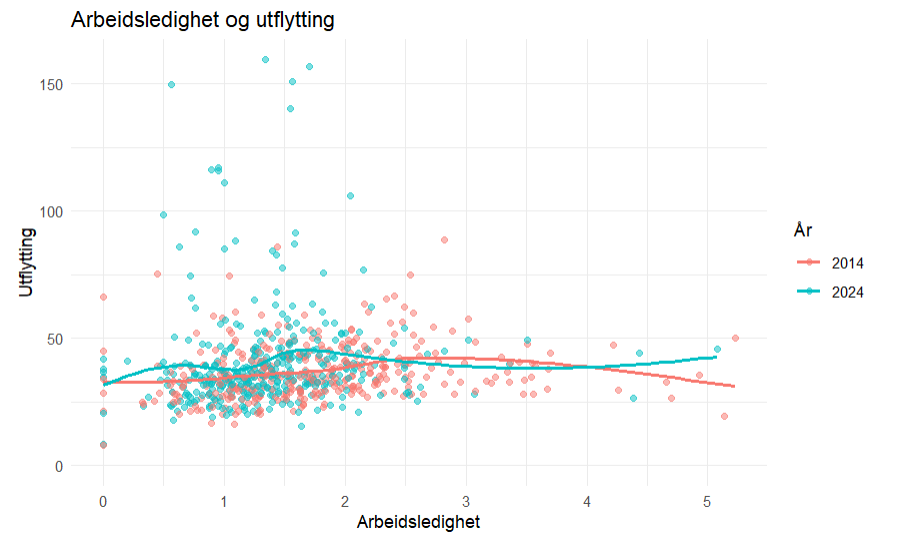
Sammenheng mellom befolkning og sysselsetting
Sammenheng mellom befolkning og sysselsetting
Call:
lm(formula = beftot ~ Arbeidssted, data = regresjon)
Residuals:
Min 1Q Median 3Q Max
-88595 -2808 -1888 738 41682
Coefficients:
Estimate Std. Error t value Pr(>|t|)
(Intercept) 3587.5154 67.0487 53.51 <0.0000000000000002 ***
Arbeidssted 1.4440 0.0024 601.77 <0.0000000000000002 ***
---
Signif. codes: 0 '***' 0.001 '**' 0.01 '*' 0.05 '.' 0.1 ' ' 1
Residual standard error: 6127 on 8923 degrees of freedom
Multiple R-squared: 0.976, Adjusted R-squared: 0.9759
F-statistic: 3.621e+05 on 1 and 8923 DF, p-value: < 0.00000000000000022Sammenheng mellom befolkning og sysselsetting
Twoways effects Within Model
Call:
plm(formula = Arbeidssted ~ beftot, data = regresjon, effect = "twoways",
model = "within", index = c("knr24", "år"))
Balanced Panel: n = 357, T = 25, N = 8925
Residuals:
Min. 1st Qu. Median 3rd Qu. Max.
-18558.7459 -135.5622 1.3733 150.1699 27175.3449
Coefficients:
Estimate Std. Error t-value Pr(>|t|)
beftot 0.5887468 0.0024466 240.64 < 0.00000000000000022 ***
---
Signif. codes: 0 '***' 0.001 '**' 0.01 '*' 0.05 '.' 0.1 ' ' 1
Total Sum of Squares: 67985000000
Residual Sum of Squares: 8740500000
R-Squared: 0.87144
Adj. R-Squared: 0.8657
F-statistic: 57906 on 1 and 8543 DF, p-value: < 0.000000000000000222Regresjon viser sammenhengen mellom befolkning og sysselsetting
Byttet på befolkning og sysselsetting som avhengig variabel.
Videre forsøkte vi å sette kommune og år som fast effekt for å se om resultatene endret seg noe.
Tidligere så vi på kurver for befolkningsutvikling og sysselsetting
beftot Arbeidssted
beftot 1.0000000 0.9879029
Arbeidssted 0.9879029 1.0000000For å regne ut korrelasjonen har vi brukt antall sysselsatte og antall i befolkning.
For å få et mer hensiktsmessig resultat kunne vi hatt andel sysselsatte eller sett på atbeidsplass per 1000 innbyggere,
Relevante hypoteser basert på deskriptiv statistikk
Så langt gjennom denne oppgaven er det blitt presentert mye deskriptiv statistikk knyttet til regional utvikling. Samlet sett gir dette et godt grunnlag for hypoteser for hvordan ulike variabler henger sammen.
Kommuner med høy sentralitet opplever større befolknignsvekst
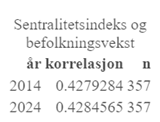
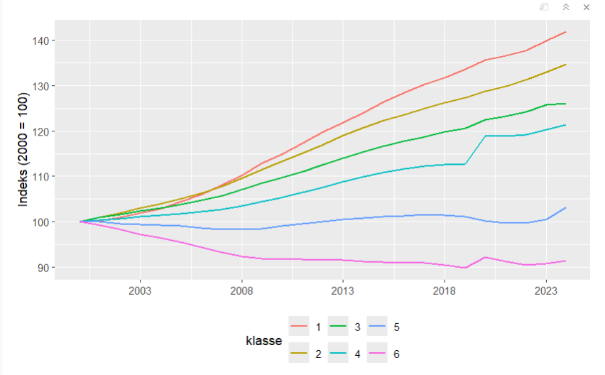
Kommuner med høy sentralitet opplever større befolknignsvekst
Agglomerasjonsteori
Kulturtilbud
Selvforsterkende vekstprosess
Kommuner med lav andel innbyggere i alderen 20-29 år opplever høyere neto utflytting
Mest mobile demografien
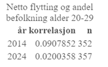
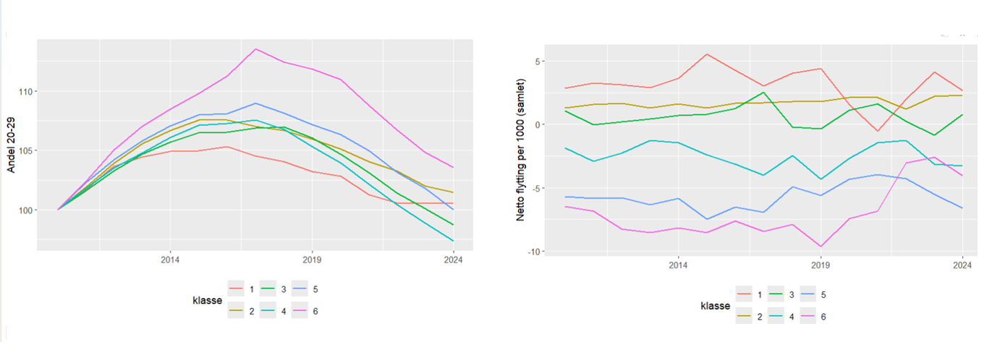
Kommuner med høy arbeidsledighet vil ha høyere netto utflytting
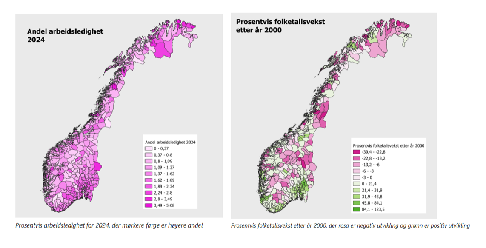
Kommuner med høy arbeidsledighet vil ha høyere netto utflytting
Krefter som trekker i hver sin retning
Migrasjonsteori- Arbeidskraft trekker mot regioner med lav ledighet
Mer spennende arbeidsmarked i kommuner med høy arbeidsledighet
Sterk velferdstat i Norge
Kommuner med stor grad av høy utdanning opplever høyere sysselsetting per 1000 inbyggere
Andelen
av innbyggerne med høyere utdanning og sentralitet
Basert på kartvisualisering og korrelasjonsanalyse forventes det en positiv sammenheng mellom sentralitetsindeks og andelen innbyggere med høyere utdanning. Kartet viser at kommuner med høy utdanningsandel i stor grad er lokalisert rundt større byregioner og mer sentrale områder, mens perifere kommuner gjennomgående har lavere andeler. Korrelasjonsanalysen for 2024 viser også en moderat positiv sammenheng (r ≈ 0,53), noe som støtter antakelsen om at mer sentrale kommuner tiltrekker eller utvikler en større andel høyt utdannet arbeidskraft. Samtidig indikerer den moderate styrken på korrelasjonen at sentralitet ikke alene forklarer variasjonen i utdanningsnivå mellom kommuner, og at andre faktorer som næringsstruktur, utdanningstilbud og demografi også kan spille en rolle.
Netto
innpendling og sysselsetting pr 1000 innbyggere
Basert på kartvisualiseringene av netto innpendling og sysselsettingsvekst etter år 2000, samt korrelasjonsanalysen, kan det forventes en sammenheng mellom netto innpendling og sysselsetting per 1000 innbyggere. Kommuner med høy netto innpendling, altså områder som tiltrekker arbeidstakere fra omliggende kommuner, kan antas å ha et mer dynamisk arbeidsmarked og dermed høyere sysselsettingsnivå. Samtidig viser korrelasjonsanalysen svært lave korrelasjonskoeffisienter for både 2014 og 2024 (r ≈ 0,01–0,02), noe som indikerer at sammenhengen i praksis er svak eller fraværende. Dette kan tyde på at pendling i stor grad reflekterer regionale arbeidsmarkedsstrukturer snarere enn direkte sysselsettingsnivå i den enkelte kommune, og at andre faktorer som næringsstruktur, demografi og geografisk beliggenhet også spiller en viktig rolle.
Sysselsettingsvekst
og gjennomsnittlig kvadratmeterpris for bolig
Basert på kartvisualiseringene av sysselsettingsvekst etter år 2000 og gjennomsnittlig kvadratmeterpris for boliger i 2024, kan det forventes en viss positiv sammenheng mellom sysselsettingsvekst og boligpriser. Kommuner med sterk sysselsettingsvekst kan antas å oppleve økt etterspørsel etter bolig som følge av arbeidsplassvekst og tilflytting, noe som kan bidra til høyere boligpriser. Samtidig viser korrelasjonsanalysen at sammenhengen er relativt svak, med stor variasjon mellom kommuner. Dette tyder på at selv om arbeidsmarkedsutvikling kan påvirke boligprisnivået, spiller også andre faktorer som sentralitet, befolkningsvekst, boligtilbud og regionale forskjeller en viktig rolle i utviklingen av boligprisene.
Sentralitet
og gjennomsnittlig kvadratmeterpris for bolig
Basert på scatterplotet og kartvisualiseringen av boligpriser, samt korrelasjonsanalysen, kan det forventes en tydelig positiv sammenheng mellom sentralitet og gjennomsnittlig kvadratmeterpris for bolig. Scatterplotet viser at boligprisene generelt øker med høyere sentralitetsindeks, og sammenhengen fremstår særlig sterk i de mest sentrale kommunene. Korrelasjonsanalysen viser også relativt høye positive korrelasjoner både i 2014 (r ≈ 0,60) og 2024 (r ≈ 0,67), noe som understøtter at sentralitet er en viktig faktor for boligprisnivået. Kartet viser samtidig at de høyeste boligprisene er konsentrert rundt større byområder og sentrale regioner.
En multippel regresjonsmodell for folketallsutvikling
År 2010
Call:
lm(formula = folkevekst_pct ~ Ledighet_pct + Hoy_utdanning_pct +
Arbeidsplasser_1k + Nettoflytting_1k + Nettopendling_1k +
ln_Boligpris + Sentralitet + Landsdel, data = regdata)
Residuals:
Min 1Q Median 3Q Max
-29.885 -6.626 -1.152 4.230 58.475
Coefficients:
Estimate Std. Error t value Pr(>|t|)
(Intercept) -316.544596 40.659892 -7.785 0.000000000000367 ***
Ledighet_pct -1.752344 0.957328 -1.830 0.068670 .
Hoy_utdanning_pct -1.226581 0.295059 -4.157 0.000047788419575 ***
Arbeidsplasser_1k 0.071147 0.018836 3.777 0.000209 ***
Nettoflytting_1k 0.736263 0.168148 4.379 0.000019239327349 ***
Nettopendling_1k -0.021724 0.005421 -4.007 0.000086655593019 ***
ln_Boligpris 27.633901 5.093821 5.425 0.000000166396142 ***
Sentralitet 0.083523 0.015081 5.538 0.000000095260571 ***
Landsdelsør -0.018218 3.396064 -0.005 0.995725
Landsdeltrøndelag 5.662196 3.680679 1.538 0.125542
Landsdelvest 0.846065 2.926797 0.289 0.772823
Landsdeløst -2.712059 3.271839 -0.829 0.408144
---
Signif. codes: 0 '***' 0.001 '**' 0.01 '*' 0.05 '.' 0.1 ' ' 1
Residual standard error: 11.21 on 200 degrees of freedom
Multiple R-squared: 0.7064, Adjusted R-squared: 0.6902
F-statistic: 43.74 on 11 and 200 DF, p-value: < 0.00000000000000022År 2000 - 2024
Call:
lm(formula = folkevekst_pct ~ Ledighet_pct + Hoy_utdanning_pct +
Arbeidsplasser_1k + Nettoflytting_1k + Nettopendling_1k +
ln_Boligpris + Sentralitet + Landsdel, data = regdata_mean)
Residuals:
Min 1Q Median 3Q Max
-36.525 -6.005 -1.304 5.046 60.807
Coefficients:
Estimate Std. Error t value Pr(>|t|)
(Intercept) -253.924291 33.030887 -7.687 0.000000000000258 ***
Ledighet_pct -0.704458 1.032588 -0.682 0.4957
Hoy_utdanning_pct -0.588402 0.236494 -2.488 0.0134 *
Arbeidsplasser_1k 0.077981 0.016679 4.675 0.000004575848587 ***
Nettoflytting_1k 0.562863 0.126720 4.442 0.000012872682797 ***
Nettopendling_1k -0.025428 0.004878 -5.213 0.000000362517610 ***
ln_Boligpris 18.320239 3.906050 4.690 0.000004277460658 ***
Sentralitet 0.094354 0.009334 10.109 < 0.0000000000000002 ***
Landsdelsør 0.452784 2.584522 0.175 0.8611
Landsdeltrøndelag 1.393288 2.857181 0.488 0.6262
Landsdelvest 1.412573 2.167587 0.652 0.5151
Landsdeløst -4.841401 2.495622 -1.940 0.0534 .
---
Signif. codes: 0 '***' 0.001 '**' 0.01 '*' 0.05 '.' 0.1 ' ' 1
Residual standard error: 10.62 on 279 degrees of freedom
Multiple R-squared: 0.7453, Adjusted R-squared: 0.7353
F-statistic: 74.23 on 11 and 279 DF, p-value: < 0.00000000000000022Paneldatasett i tillegg til årlig vekst
Call:
lm(formula = folketallsvekst ~ Ledighet_pct + Hoy_utdanning_pct +
Arbeidsplasser_1k + Nettoflytting_1k + Nettopendling_1k +
ln_Boligpris, data = df_6_csB)
Residuals:
Min 1Q Median 3Q Max
-16.546 -4.102 -0.597 3.529 22.309
Coefficients:
Estimate Std. Error t value Pr(>|t|)
(Intercept) -221.421130 17.299034 -12.800 < 0.0000000000000002 ***
Ledighet_pct 0.757828 0.567721 1.335 0.182984
Hoy_utdanning_pct -0.278352 0.129933 -2.142 0.033016 *
Arbeidsplasser_1k 0.034622 0.009777 3.541 0.000465 ***
Nettoflytting_1k 0.290941 0.063654 4.571 0.00000724 ***
Nettopendling_1k -0.013475 0.002956 -4.558 0.00000764 ***
ln_Boligpris 22.187834 2.047196 10.838 < 0.0000000000000002 ***
---
Signif. codes: 0 '***' 0.001 '**' 0.01 '*' 0.05 '.' 0.1 ' ' 1
Residual standard error: 6.525 on 286 degrees of freedom
Multiple R-squared: 0.6376, Adjusted R-squared: 0.63
F-statistic: 83.88 on 6 and 286 DF, p-value: < 0.00000000000000022Sammenligning
$`_data`
# A tibble: 26 x 4
` ` `Tverrsnitt (X=2010)` Tverrsnitt (X=snitt ~1 Periode-gjennomsnitt~2
<chr> <chr> <chr> <chr>
1 "(Interc~ -316.545*** -253.924*** -221.421***
2 "" (47.905) (42.984) (16.844)
3 "Ledighe~ -1.752* -0.704 0.758
4 "" (0.858) (1.024) (0.680)
5 "Hoy_utd~ -1.227** -0.588+ -0.278*
6 "" (0.426) (0.326) (0.139)
7 "Arbeids~ 0.071+ 0.078* 0.035**
8 "" (0.039) (0.036) (0.013)
9 "Nettofl~ 0.736*** 0.563** 0.291***
10 "" (0.181) (0.211) (0.086)
# i 16 more rows
# i abbreviated names: 1: `Tverrsnitt (X=snitt 2000-2024)`,
# 2: `Periode-gjennomsnitt (Modell B)`
$`_boxhead`
var type column_label
1 default
2 Tverrsnitt (X=2010) default Tverrsnitt (X=2010)
3 Tverrsnitt (X=snitt 2000-2024) default Tverrsnitt (X=snitt 2000-2024)
4 Periode-gjennomsnitt (Modell B) default Periode-gjennomsnitt (Modell B)
column_units column_pattern column_align column_width hidden_px
1 <NA> <NA> left NULL NULL
2 <NA> <NA> center NULL NULL
3 <NA> <NA> center NULL NULL
4 <NA> <NA> center NULL NULL
$`_stub_df`
rownum_i row_id group_id group_label indent built_group_label
1 1 <NA> <NA> NULL <NA> <NA>
2 2 <NA> <NA> NULL <NA> <NA>
3 3 <NA> <NA> NULL <NA> <NA>
4 4 <NA> <NA> NULL <NA> <NA>
5 5 <NA> <NA> NULL <NA> <NA>
6 6 <NA> <NA> NULL <NA> <NA>
7 7 <NA> <NA> NULL <NA> <NA>
8 8 <NA> <NA> NULL <NA> <NA>
9 9 <NA> <NA> NULL <NA> <NA>
10 10 <NA> <NA> NULL <NA> <NA>
11 11 <NA> <NA> NULL <NA> <NA>
12 12 <NA> <NA> NULL <NA> <NA>
13 13 <NA> <NA> NULL <NA> <NA>
14 14 <NA> <NA> NULL <NA> <NA>
15 15 <NA> <NA> NULL <NA> <NA>
16 16 <NA> <NA> NULL <NA> <NA>
17 17 <NA> <NA> NULL <NA> <NA>
18 18 <NA> <NA> NULL <NA> <NA>
19 19 <NA> <NA> NULL <NA> <NA>
20 20 <NA> <NA> NULL <NA> <NA>
21 21 <NA> <NA> NULL <NA> <NA>
22 22 <NA> <NA> NULL <NA> <NA>
23 23 <NA> <NA> NULL <NA> <NA>
24 24 <NA> <NA> NULL <NA> <NA>
25 25 <NA> <NA> NULL <NA> <NA>
26 26 <NA> <NA> NULL <NA> <NA>
$`_row_groups`
character(0)
$`_row_order`
list()
$`_heading`
$`_heading`$title
NULL
$`_heading`$subtitle
NULL
$`_heading`$preheader
NULL
$`_spanners`
[1] vars spanner_label spanner_units spanner_pattern
[5] spanner_id spanner_level gather built
<0 rows> (or 0-length row.names)
$`_stubhead`
$`_stubhead`$label
NULL
$`_footnotes`
[1] locname grpname colname locnum rownum colnum footnotes
[8] placement
<0 rows> (or 0-length row.names)
$`_source_notes`
$`_source_notes`[[1]]
[1] "+ p < 0.1, * p < 0.05, ** p < 0.01, *** p < 0.001"
$`_formats`
list()
$`_substitutions`
list()
$`_styles`
locname grpname colname locnum rownum colnum
1 data <NA> 5 24 NA
2 data <NA> Tverrsnitt (X=2010) 5 24 NA
3 data <NA> Tverrsnitt (X=snitt 2000-2024) 5 24 NA
4 data <NA> Periode-gjennomsnitt (Modell B) 5 24 NA
styles
1 bottom, 1px, solid, #000000
2 bottom, 1px, solid, #000000
3 bottom, 1px, solid, #000000
4 bottom, 1px, solid, #000000
$`_summary`
list()
$`_summary_cols`
list()
$`_summary_cols_build`
list()
$`_options`
# A tibble: 200 x 5
parameter scss category type value
<chr> <lgl> <chr> <chr> <list>
1 table_id FALSE table value <chr [1]>
2 table_caption FALSE table value <chr [1]>
3 table_width TRUE table px <chr [1]>
4 table_layout TRUE table value <chr [1]>
5 table_margin_left TRUE table px <chr [1]>
6 table_margin_right TRUE table px <chr [1]>
7 table_background_color TRUE table value <chr [1]>
8 table_additional_css FALSE table values <chr [0]>
9 table_font_names FALSE table values <chr [10]>
10 table_font_size TRUE table px <chr [1]>
# i 190 more rows
$`_transforms`
list()
$`_locale`
$`_locale`$locale
NULL
$`_has_built`
[1] FALSE
attr(,"class")
[1] "gt_tbl" "list"
attr(,"backend")
attr(,"backend")$`Tverrsnitt (X=2010)`
attr(,"backend")$`Tverrsnitt (X=2010)`$est
[1] "parameters"
attr(,"backend")$`Tverrsnitt (X=2010)`$gof
[1] "parameters"
attr(,"backend")$`Tverrsnitt (X=snitt 2000-2024)`
attr(,"backend")$`Tverrsnitt (X=snitt 2000-2024)`$est
[1] "parameters"
attr(,"backend")$`Tverrsnitt (X=snitt 2000-2024)`$gof
[1] "parameters"
attr(,"backend")$`Periode-gjennomsnitt (Modell B)`
attr(,"backend")$`Periode-gjennomsnitt (Modell B)`$est
[1] "parameters"
attr(,"backend")$`Periode-gjennomsnitt (Modell B)`$gof
[1] "parameters"Multiple regresjonsmodeller for sysselsettingsvekst
Hva som henger sammen med sysselsettingsvekst i norske kommuner i perioden 2000 til 2024.
Alle modellene kontrollerer vi for strukturelle forhold som arbeidsledighet, utdanning, arbeidsplasser per innbygger, nettoflytting, pendling og boligpriser.
Vi har også inkludert sentralitet og landsdelsdummyer.
År 2010
Call:
lm(formula = syssvekst_pct ~ folkevekst_pct + Ledighet_pct +
Hoy_utdanning_pct + Arbeidsplasser_1k + Nettoflytting_1k +
Nettopendling_1k + ln_Boligpris + Sentralitet + Landsdel,
data = regdata_syss_2010)
Residuals:
Min 1Q Median 3Q Max
-59.665 -7.948 -0.602 5.989 89.029
Coefficients:
Estimate Std. Error t value Pr(>|t|)
(Intercept) -130.2475511 64.2457817 -2.027 0.0440 *
folkevekst_pct 0.9987089 0.0978777 10.204 <0.0000000000000002 ***
Ledighet_pct -0.7165934 1.3361868 -0.536 0.5924
Hoy_utdanning_pct -0.2008268 0.4257006 -0.472 0.6376
Arbeidsplasser_1k 0.0185654 0.0269866 0.688 0.4923
Nettoflytting_1k -0.0004705 0.2436510 -0.002 0.9985
Nettopendling_1k -0.0030583 0.0077996 -0.392 0.6954
ln_Boligpris 16.5010592 7.5518415 2.185 0.0301 *
Sentralitet -0.0330136 0.0224182 -1.473 0.1424
Landsdelsør -2.1208762 4.7008300 -0.451 0.6524
Landsdeltrøndelag 0.8470744 5.1248474 0.165 0.8689
Landsdelvest -5.5852821 4.0521175 -1.378 0.1696
Landsdeløst -2.6345419 4.5366507 -0.581 0.5621
---
Signif. codes: 0 '***' 0.001 '**' 0.01 '*' 0.05 '.' 0.1 ' ' 1
Residual standard error: 15.52 on 199 degrees of freedom
Multiple R-squared: 0.6681, Adjusted R-squared: 0.648
F-statistic: 33.38 on 12 and 199 DF, p-value: < 0.00000000000000022Gjennomsnitt År 2010 - 2024
Call:
lm(formula = syssvekst_pct ~ folkevekst_pct + Ledighet_pct +
Hoy_utdanning_pct + Arbeidsplasser_1k + Nettoflytting_1k +
Nettopendling_1k + ln_Boligpris + Sentralitet + Landsdel,
data = regdata_syss_mean)
Residuals:
Min 1Q Median 3Q Max
-68.020 -7.332 -0.836 6.189 88.699
Coefficients:
Estimate Std. Error t value Pr(>|t|)
(Intercept) -104.277209 49.376235 -2.112 0.03559 *
folkevekst_pct 1.018749 0.081297 12.531 < 0.0000000000000002 ***
Ledighet_pct 0.316204 1.403356 0.225 0.82190
Hoy_utdanning_pct -0.064136 0.324686 -0.198 0.84356
Arbeidsplasser_1k 0.049115 0.023520 2.088 0.03769 *
Nettoflytting_1k 0.107253 0.178057 0.602 0.54743
Nettopendling_1k -0.008329 0.006939 -1.200 0.23104
ln_Boligpris 12.046538 5.509303 2.187 0.02961 *
Sentralitet -0.041479 0.014816 -2.800 0.00547 **
Landsdelsør 1.080550 3.509806 0.308 0.75841
Landsdeltrøndelag -0.590675 3.881519 -0.152 0.87916
Landsdelvest -2.677481 2.945681 -0.909 0.36416
Landsdeløst -0.810450 3.411672 -0.238 0.81240
---
Signif. codes: 0 '***' 0.001 '**' 0.01 '*' 0.05 '.' 0.1 ' ' 1
Residual standard error: 14.42 on 278 degrees of freedom
Multiple R-squared: 0.6844, Adjusted R-squared: 0.6707
F-statistic: 50.23 on 12 and 278 DF, p-value: < 0.00000000000000022Samlet vekst 2010 - 2024
Call:
lm(formula = syssvekst_pct ~ folketallsvekst + Ledighet_pct +
Hoy_utdanning_pct + Arbeidsplasser_1k + Nettoflytting_1k +
Nettopendling_1k + ln_Boligpris + Sentralitet + Landsdel,
data = df_7_csB)
Residuals:
Min 1Q Median 3Q Max
-26.230 -4.808 -0.637 3.872 40.163
Coefficients:
Estimate Std. Error t value Pr(>|t|)
(Intercept) -60.578982 34.559185 -1.753 0.0807 .
folketallsvekst 0.918937 0.088186 10.420 <0.0000000000000002 ***
Ledighet_pct 0.771741 0.846362 0.912 0.3627
Hoy_utdanning_pct -0.058225 0.189296 -0.308 0.7586
Arbeidsplasser_1k 0.019998 0.014147 1.414 0.1586
Nettoflytting_1k 0.179663 0.093797 1.915 0.0565 .
Nettopendling_1k -0.001052 0.004313 -0.244 0.8076
ln_Boligpris 6.730753 4.036581 1.667 0.0966 .
Sentralitet -0.020455 0.009400 -2.176 0.0304 *
Landsdelsør -0.320602 2.325060 -0.138 0.8904
Landsdeltrøndelag 0.276271 2.403320 0.115 0.9086
Landsdelvest -1.729497 1.840499 -0.940 0.3482
Landsdeløst 0.377292 2.162419 0.174 0.8616
---
Signif. codes: 0 '***' 0.001 '**' 0.01 '*' 0.05 '.' 0.1 ' ' 1
Residual standard error: 9.031 on 275 degrees of freedom
Multiple R-squared: 0.5921, Adjusted R-squared: 0.5743
F-statistic: 33.27 on 12 and 275 DF, p-value: < 0.00000000000000022Oppsummert
Folketallsvekst er den klart viktigste forklaringen på sysselsettingsvekst.
Sammenhengen er nesten én-til-én i alle modellene.
Strukturelle faktorer som boligpriser og arbeidsplasser per innbygger spiller en rolle, men er mindre viktige.
Landsdel har ingen selvstendig betydning.
Hovedmønsteret er stabilt på tvers av modellene.
Konklusjon
De mest sentrale kommunene har hatt sterkere befolkningsvekst, høyere sysselsettingsvekst og høyere boligpriser enn mindre sentrale kommuner
I modellene for folketallsvekst finner vi at nettoflytting, arbeidsplasser per 1000 innbyggere og boligpriser har en tydelig og gjennomgående positiv sammenheng med vekst.
Når vi analyserer sysselsettingsvekst, finner vi at folketallsvekst er den klart sterkeste forklaringsvariabelen.
Tilsvarende kan høye boligpriser både være et resultat av vekst og en indikator på attraktivitet som trekker til seg nye innbyggere.
Analysen at regional utvikling i Norge i stor grad henger sammen med sentralitet, arbeidsmarked og flyttemønstre.
Kildeliste
Capello, R. (2016). Regional Economics (2. utg.). Routledge.
Grünfeld, L. A., & Leknes, E. (2016). Forskeren forteller: Formelen for vekst i norske småbyer. https://www.forskning.no/politikk-samfunnskunnskap-samfunnsgeografi/forskeren-forteller-formelen-for-vekst-i-norske-smabyer/380780
Osland, L., & Thorsen, I. (2008). Effects on Housing Prices of Urban Attraction and Labor-Market Accessibility. Environment and Planning A, 40, 2490–2509. https://doi.org/10.1068/a39305